Migrate from WordPress to Ghost
 Danny Wahl
•
•
Danny Wahl
•
•
I've been using WordPress as the backend of my website for about 4 years now. I've been a fan of its simplicity, its usability, and its extensability. I didn't want to spend a lot of time developing a site- I just wanted to blog but as time went on my site was hacked, hacked again, botched an upgrade, received 20,000+ spam comments, and I realized I was spending more time as a WordPress administrator than as a WordPress author. In a nutshell I was tired of my WordPress backend looking like this:
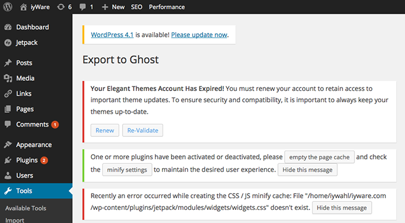
So in my usual fashion I decided to pick something new that I knew nothing about and dive into that. I picked Ghost because at its core it's what I wanted; a blogging platform. Sure it's young, sure it's missing some features I want (or at least I thought I did until I actually started migrating) but that's OK with me. It's extremely functional as a blog.
In this post I will detail how I migrated, and how you can migrate too, from WordPress to Ghost. I'm going to assume that you have a copy of Ghost already up an running somewhere. I did mine on my MacBook but you could have a host somewhere too, however, if that's the case, you'll probably need FTP access at some point.
Export Your WordPress Content
There is quite a list of things that need to be exported from WordPress if you want to do a full site migration which may include:
- Comments
- Uploads (images, .zip, text files, etc...)
- Users
- Posts
- Pages
- Tags
and Categories
At the time of this writing Ghost doesn't support categories, so we're not going to bother with attempting to add functionality. If you want categories, please read the Ghost documentation on the subject first and then try this hack or make sure that your WordPress post category is also a tag.
Export Your WordPress Comments
The first thing to do is export your WordPress comments. Unfortunately at the time of this writing Ghost does not support native comments, but there are many commenting solutions available that can be easily integrated with Ghost. For this tutorial we will be using Disqus to host our comments.
Install Disqus WP Plugin
There is a plugin available from the WordPress plugins page called "Disqus Comment System" that needs to be installed. This is the official Disqus plugin for WordPress and as such it works pretty well. Simply install and activate the plugin.
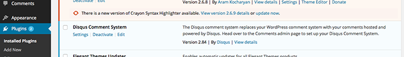
Add a Disqus Site
If you don't already have a Disqus account sign up for one, if you do have an account sign in and click on "Add Disqus to Your Site".
Fill out the 3 fields on the form with the information for your site and click "Finish Registration". For example my site name is just 'iyWare' and the URL is 'iyware.disqus.com'. However, if you have a marketing identity or branding guideline, follow that. Frankly I'm not sure how many people stumble up a blog by navigating the Disqus homepage so your conversion based on this information alone will probably be pretty low.
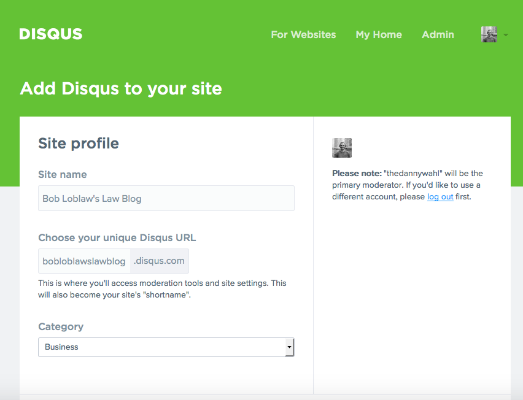
After you click "Finish Registration" you will be taken to the "Install" page under "Settings". Since we've installed the Disqus plugin on WordPress we don't need to do a separate installation. But we will need to come back to this page to get the "Universal Code" (a.k.a. JavaScript) when it's time to install it in Ghost.
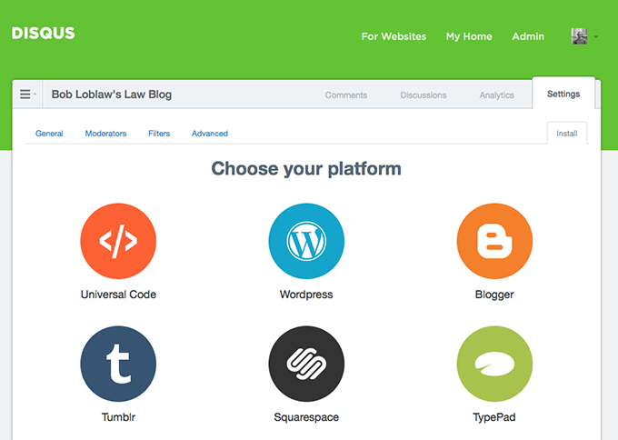
Migrate Comments to Disqus
Head back to your WordPress Dashboard and navigate to Comments in the sidebar. If you have any spam comments you'll want to delete those so that they don't accidentally get imported into Disqus. This shouldn't happen, but I had a few get in there.
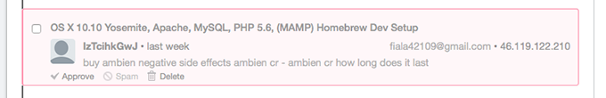
Now click on Comments → Disqus in the sidebar. If your site was has not been configured yet you will need to authenticate to Disqus and type in your site's identifier, which is the "Unique Disqus URL" that you chose earlier.
Once you've authenticated you can scroll down to the section titled "Import and Export" and find the label "Export Comments to Disqus". Click the "Export Comments" button.
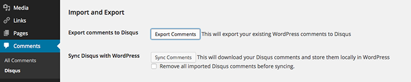
Shortly you should get an email from Disqus saying that comment migration has begun.
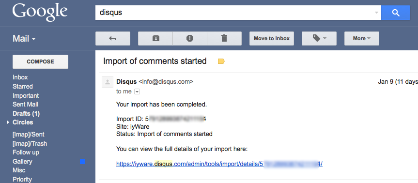
The linked site will show you the progress and tell you that it might take up to 24 hours to complete. My site only too 3 or 4 hours, but I don't have too many comments (maybe 100?).
Delete comments from WP
After your comments are fully migrated to Disqus go back to WordPress → Comments → All Comments and delete all comments on your site. Please don't delete your comments before the export is done (this should be obvious). At this point I should mention that you might want to backup your WP DB first ;)
The reason we're going to delete the comments from the WordPress instance is because even though Ghost doesn't support comments yet the Ghost WordPress export tool DOES export your comments in its JSON file. So despite the fact that the documentation says
Ghost does not, and will not deal with comments.
the Ghost exporter DOES export the comments. Since I had over 1,800 spam comments they all got added to the JSON file and caused a real headache later- just to be ignored by Ghost. So do yourself a favor, and delete the comments.
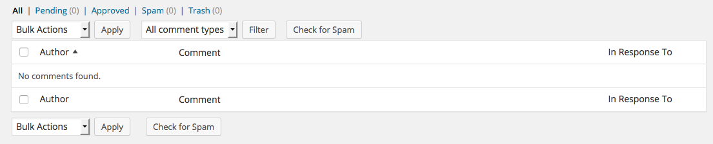
After this you might want to temporarily disable commenting on your WordPress site or fully integrate Disqus because if people continue adding comments to WP after you've done the migration, they will be lost when you kick over to Ghost.
Finally you can head to your Disqus dashboard and view your site's comments there.
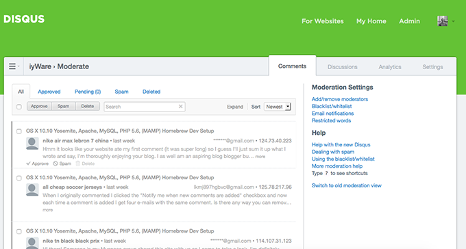
Export Your WordPress Media (Uploads)
According to the Ghost documentation
Ghost has very rudimentary media handling at the moment, and currently grabbing images from WordPress and plucking them into Ghost is tedious. For that reason it might be a good idea to sign up for a free Cloudinary account...
However, migrating your media (anything you've uploaded to WordPress) is not actualy that difficult of a task and there are many good reasons to not host your images on another cloud account.
The reason that they advocate this is because the cloudinary plugin will transfer all your files to their server and then rewrite the URLs in your wordpress database so, for example
http://www.example.com/assets/coolimage.gif
would get rewritten as
http://couldinary.com/youraccount/coolimage.gif
which Ghost would have no trouble with when it is running as example.com instead of WordPress. But it's very very simple to continue to serve your images directly from Ghost.
Find Your WordPress Media Files
In WordPress head to Settings → Media and scroll down until you find the "Uploading Files" Section. Take note of where your files are uploaded to.
It does not matter if you have "Organize my uploads into month- and year-based folders" checked or not. However, IF you do have it enabled you will be able to get even richer Ghost integration. If you don't please don't change it- as this will only affect new media files.
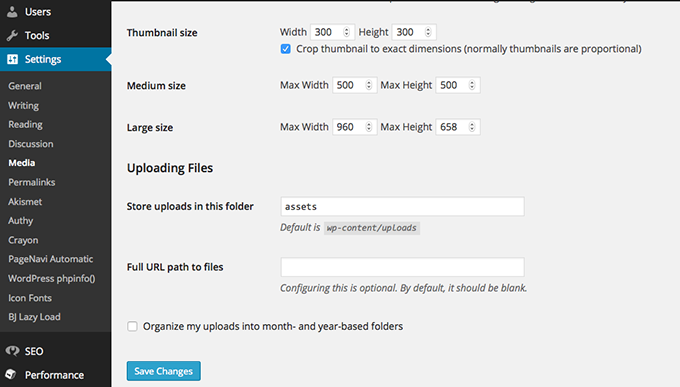
Download Your WordPress Media Files
Once you know where the files are open up your FTP client and download the entire containing folder. So in the example above I would be downloading /assets/ folder. If yours is the default you will be downling the /uploads/ folder NOT /wp-content/. If you accidentally download /wp-content/ it's OK- we'll just pull /uploads/ from inside of it later.
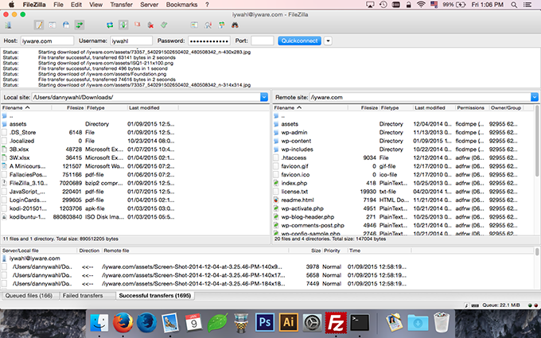
If you don't know your FTP credentials you'll need to check with your hosting provider about how to access. If you don't have FTP you could try using the "downML" WordPress plugin to download your media library directly from WordPress. I haven't personally tried this plugin.
Optionally Optimize Your Files
This isn't a necessary step, but since Ghost doesn't have rich multimedia handling you could take this opportunity to properly minimize all of your media. I simply dragged the entire assets folder that I downloaded onto the ImageOptim application.
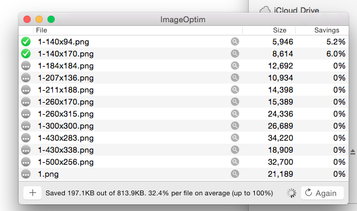
You might notice that for every file uploaded to WordPress, e.g. "1.png" there are multiple versions in the media folder. This is because the way WordPress works is to create multiple sizes of each image and store them on the server, which you can then insert into a post/page/whatever. Ghost will only use one version but it doesn't hurt to have them all there- it will only use more disk space, not more bandwidth.
After the image compression finishes you'll probably find it's quite worth it. I was able to shave 35.8MB off of 138.7MB for a total of 29.9%. Not too shabby.
If you want to further optimize your images you could batch resize them to the max-width that you theme will output. I don't necessarily recommend this as you might want a header image or change themes at some point in the future. Not too mention that a user could still want to see the image at full size which simply isn't possible if you've manually resized it.
Move Your WordPress Media to Ghost
WordPress will store your images by default in the relative path /wp-content/uploads/ and if you've enabled year and month sorting then it will add YYYY/MM/ to the path.
Ghost will store your images by default in /content/images/YYYY/MM/ which is a similar URL structure.
Now you can take your WordPress uploads folder and just drop it into the /ghost/content/images/ folder on your install. You can see that I renamed mine to "import" (which might not have been the best idea) but if an image failed I wanted to know it was from WordPress.
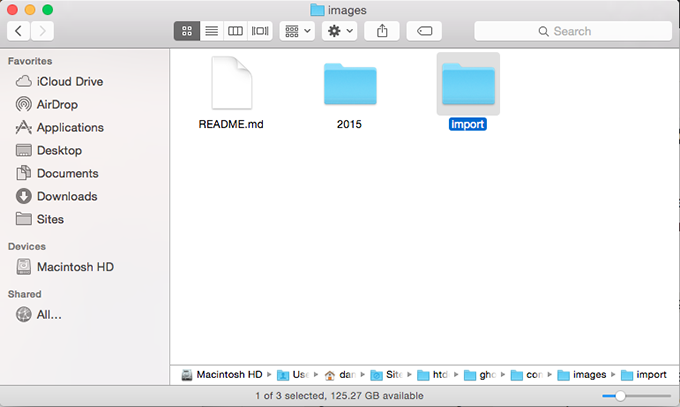
If you were using year and month folders in WordPress then you can merge the folder with the Ghost folder for a completely seamless migration. However, since I haven't tested this You might need to be careful for name collisions when adding media in the future. This should NOT be an issue because importing our WordPress post content (covered later) should add the media references to the sqlite database.
For my site any posts imported from WordPress will serve images from /content/images/import/image.png and any new posts created in Ghost will serve from /content/images/YYYY/MM/image.png with no ill effect.
We'll still have a little more work to do to point the post data to the new URL but that will be covered later on. For now your physical assets are located in Ghost. You can test this by creating a new post in Ghost, inserting an image, and pointing the path to an imported image:
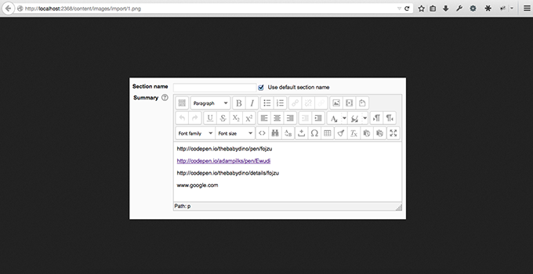
Export Your WordPress Data
Now that we've taken care of comments and media it's time to move on to actual WordPress data. There are quite a few steps to this process but they are all fairly simple.
Publish Your WordPress Drafts
I recommend that if you have any WordPress drafts that you publish them. The Ghost Export tool should handle them, but it definitely handles published materials. You can always unpublish once your content is imported into Ghost.
Delete Your WordPress Trash
If you have any trash on WordPress, delete it. This includes Posts, Pages, Comments, etc... If you don't want it then you definitely don't want it to migrate. For now less is more. If You have a backup of your DB you can always go back and get it later.
Convert Your WordPress Post Types
One of the most popular features in WordPress is custom post types like "Portfolio", "Gallery", or whatever. However, Ghost only supports two types- which are the default WordPress types- "Post" and "Page". The Ghost Exporter might export other types but it won't know how to map them, so you'll need to do it manually.
The "Post Type Switcher" WordPress plugin is a great utility for switching individual posts. To change a post type after you have installed this plugin simply go to edit the post (page, or whatever) and click "Edit" under the "Post Type" section in the "Publish" widget, choose Post or Page, and click "Update".
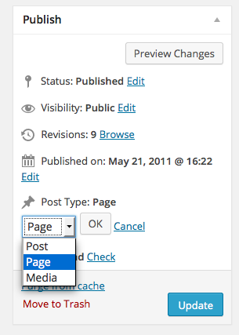
If You have a lot of posts to convert you might consider using the "Convert Post Types" plugin instead. I have not personally used this plugin.
Add WordPress Categories as Tags
As we mentioned earlier, Ghost does not support Categories- only tags. As a result when we export WordPress data later categories will be lost. If you wish to preserve a category-like metadata in your post you must add the category as a tag in your WordPress posts.
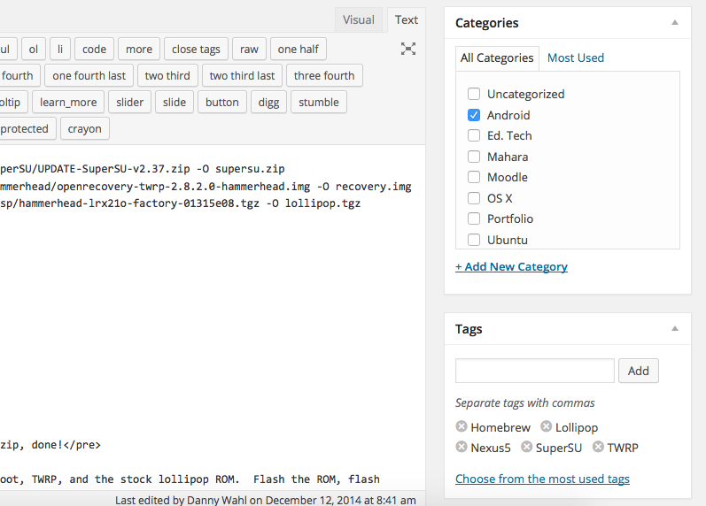
In this example the category "Android" will not be preserved when exporting to Ghost. I need to manually add the category as a tag.
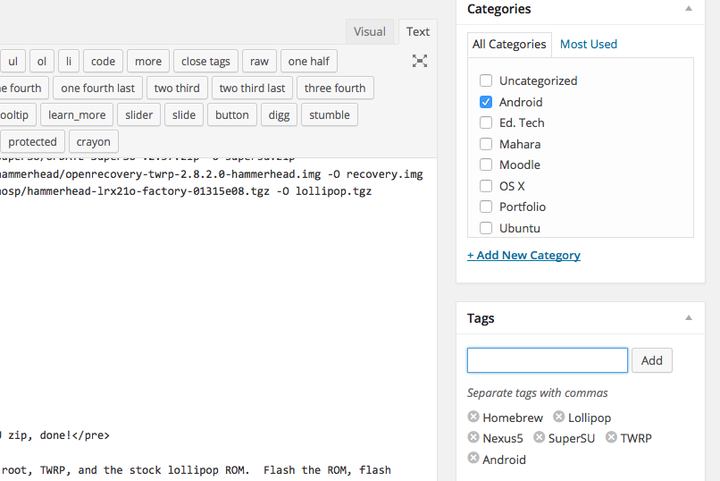
Now when I export my WordPress data the tag "Android" will still be associated with this post. At the time of this writing Ghost 0.5.8 has only rudimentary tag support, so you can't set "Android" as the first or primary tag or anything like that- tags are simply all listed alphabetically.
If you have many posts I suggest using the WordPress plugin "Categories to Tags Converter" which will automate this process for you. I have not personally used this plugin.
Delete Your WordPress Users
The Ghost export plugin will export all users and associated metadata, so if you have "Anyone can register" enabled under Settings → General in your WordPress instance you will need to check your users page to see how many users you have.
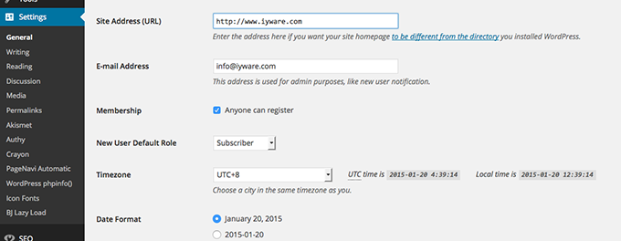
Navigate to Users → All Users and see how many users are registered on your site. My site had over 18,000 users registered with the default role "Subscriber". If you don't have too many users you can filter the role and delete them.

However, if you have more than a few hundred users it will be more effective to delete the users directly from the database. You can connect to phpMyAdmin or directly to your database and execute the following SQL commands.
DELETE
FROM wp_users
WHERE ID NOT IN
(SELECT post_author FROM wp_posts
UNION SELECT user_id FROM wp_comments);
DELETE
FROM wp_usermeta
WHERE user_id NOT IN
(SELECT ID FROM wp_users);
commands courtsey of vtxyzzy at WordPress Support Forums
This will execute two commands, the first will delete all users from the wp_users table who are not post authors. Caveat: if you have an admin account that you use to change settings and a separate account to post with you WILL lose your admin account. Quickly publish something with your admin account or modify the SQL command.
The second command will delete the metadata for users from the wp_metadata table for users that aren't found in the wp_users table.
Again, please make sure you have a backup of your database first. After you execute the SQL commands you can refresh the All Users page on WordPress and only post authors should be left- in my case just my account.
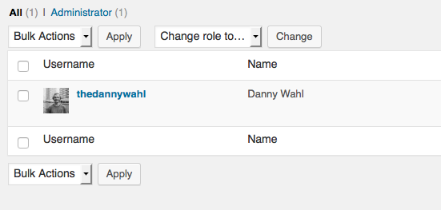
Install WordPress Ghost Exporter
I've mentioned exporting your WordPress data to Ghost a few times so far and now we're going to get ready to do just that. The final WordPress plugin you'll need to install is the oddly named "Ghost" which takes all of WordPress data, and converts it to a format that can be imported to your Ghost instance. Once you've installed and activated the plugin head to Tools → Export to Ghost in WordPress.
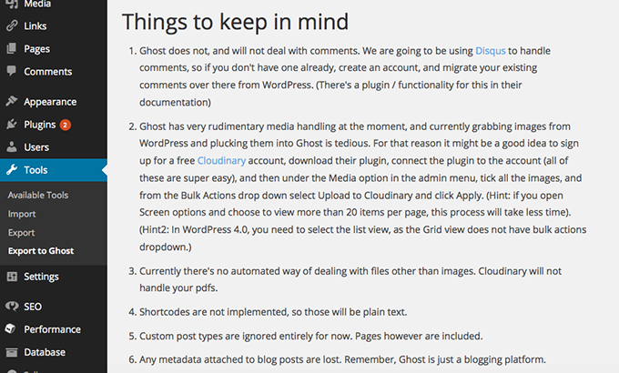
Export Your Ghost JSON File
Now that the Ghost exporter is installed and activated it's time to actually export the data. You can safely ignore the "Things to Keep in Mind" section as it mostly covers things that we've gone over in this post. Scroll to the bottom of the page and click "Download Ghost File"
WordPress will think for a minute and you should eventually get a download prompt for a .json file
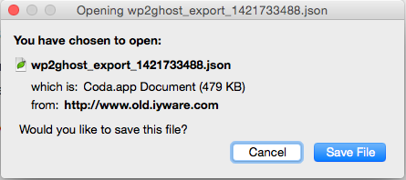
Save the file to your local machine and you're done with WordPress for now.
Fix Ghost JSON Export Errors
The potential for something going wrong is pretty high at this point. There's a lot of data manipulation and conversion going on and the amount of variables from system to system can be pretty extreme. Your best bet is to check the WordPress to Ghost Support Forum at WordPress and see if anyone else has had the same error as you. If they haven't, report it there and see if someone can help you. That said here are the errors I ran into.
Error: White Page of Death
After clicking "Download Ghost File" my WordPress just hung for a minute and turned to a white page. I enabled debugging on my WordPress instance by editing my wp-config.php and changing
define( 'WP_DEBUG', false );
to
define( 'WP_DEBUG', true );
After enabling debugging I ran the export again and the page output the error:
Fatal error: Maximum execution time of 30 seconds exceeded
Essentially, it was taking the exporter longer to build the download file than my server was set to allow. Fortunately this is something that can be easily changed in a variety of ways:
I ended up settling on the script level so that it only changed it for this export tool. To do this, in WordPress head to Plugins → Editor and choose "Ghost" from the menu on the top right then select the file ghost/class-ghost.php.
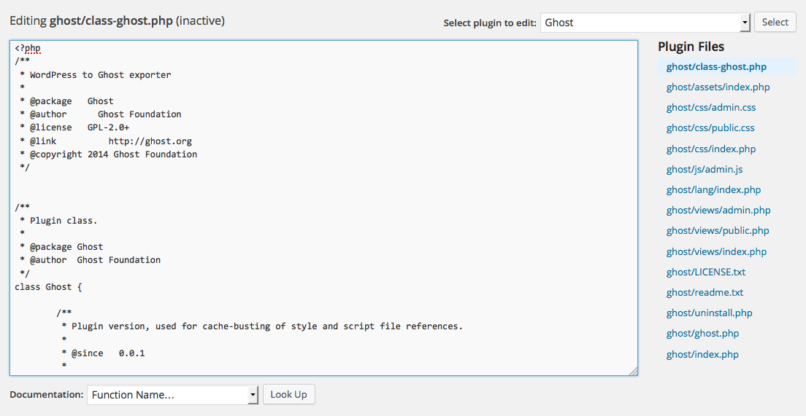
Search the file for the definition of the function populate_data() at the begging of the function add an ini_set(). Your code should now look like this:
/**
* Gets the raw data in an array that will be later turned into glorious escaped json format
* so Ghost can gobble it up
* @return array everything we need, but in an array
*/
public function populate_data() {
ini_set('max_execution_time', 0);
if ( $this->garray !== null ) {
return;
}
$this->_safe_url( 'http://google.com' );
$this->garray = array();
// preps the structure
$this->prepare_garray_structure();
// attaches metadata
$this->populate_meta();
// get the users
$this->populate_users();
// attaches tags
$this->populate_tags();
// populates posts
$this->populate_posts();
}
setting the value of max_execution_time to 0 means 'unlimited'. Now you might run into a memory error, but similarly you can allocate extra memory.
Error: Invalid Content Encoding
After I was able to extend the execution time I started getting an "Invalid Content Encoding" error when trying to generate the file. It would gripe about being unable to set headers after they'd already been set. The specific code it was referring to was again in class-ghost.php
header( 'Content-Description: File Transfer' );
header( 'Content-Type: application/octet-stream' );
header( 'Content-Disposition: attachment; filename='.$filename );
header( 'Content-Transfer-Encoding: binary' );
header( 'Expires: 0' );
header( 'Cache-Control: must-revalidate' );
header( 'Pragma: public' );
header( 'Content-Length: ' . filesize( $filedir . '/' . $filename ) );
Here ghost is trying to build and serve the download file, not a webpage, but what I discovered was that with debugging on PHP would throw an error
Notice: Undefined index: description in /wp-content/plugins/ghost/class-ghost.php on line 394
saying that it couldn't grab some data from WordPress. When PHP threw the error it would set the headers to a webpage to display the error, then Ghost Export would try to set them to be a file download, and we'd end up with a content encoding error.
There are a couple of ways to fix this. The first (and easiest) is to disable debugging. This will prevent PHP from throwing a notice, that value will silently fail (not a problem) and you'll get your export file. The second is to comment out the link looking for the description index so the failure doesn't occur. You still don't end up with the data but it's not a big deal. Again in class-ghost.php edit the user_meta section to comment out bio as shown below:
foreach ( $users as $user ) {
$user_meta = get_user_meta( $user->ID );
$this->garray['data']['users'][] = array(
'id' => $this->_safe_author_id( $user->ID ),
'slug' => $user->user_login,
//'bio' => substr( $user_meta['description'][0], 0, 199 ),
'website' => $this->_safe_url( $user->user_url ),
'created_at' => $this->_get_json_date( $user->user_registered ),
'created_by' => 1,
'email' => $user->user_email,
'name' => $user->user_nicename,
);
}
Error: 404 Page Not Found
Occassionally you will end up at a page that was served by the WordPress front end instead of getting your JSON file or an error. This is, I believe (though I haven't investigated) related to the script execution time and memory limit. Increasing those as described above should resolve it.
Error: Corrupt JSON File
You won't necessarily know that you have a corrupt file until you go to import it and it fails. But a fast way to check if your download file is vaild is to either open it in a text editor and check, or pass it to a website like JSONLint. A corrupt file would look something like this:
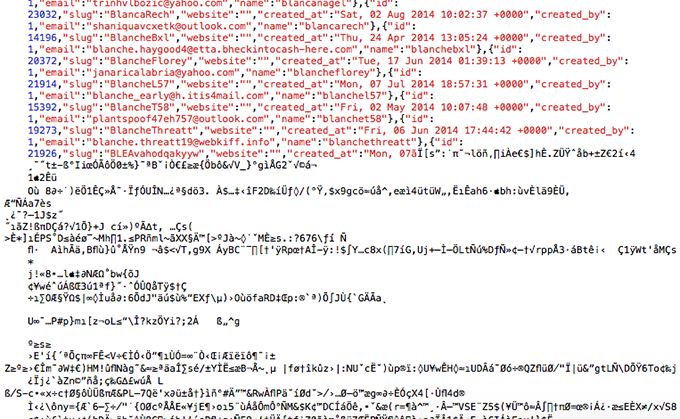
If you look closesly you can see that where it falls apart is actually on a user account. When I first tried to export my WP data to JSON the file size was over 4MB. 4MB of text is quite a lot of data. After removing comments, users, drafts, etc... the final file size was 498Kb. So if you're getting a botched JSON file please make sure that you've followed this tutorial so far- otherwise investigate where it's failing and if you can't fix it submit a report at the WordPress Support Forums for Ghost.
Manipulate Your WordPress Data
If you follow the import instructions of the Ghost plugin you would simply import your JSON file into Ghost, but if you do that now you'll spend more time correcting data in Ghost than you need to. We're simply going to massage the data to be a better fit in Ghost.
Remove WordPress Shortcodes
One of the major drawbacks of WordPress is shortcodes. Years ago they were revolutionary, [gallery] was awesome! But once theme devs started adding their own shortcodes to create a type of "vendor lock-in" then they got really frustrating.
So Hopefully you didn't have any shortcodes in your text. I did. When you import them into ghost the raw code will show up. For example, if you had a shortcode called [button] that outputs a link element with the class button, in Ghost you'll just have:
[button href="#"]Text[/button]
Which probably you just don't want. Now, fortunately shortcodes are just a bit of code that become a different bit of code which means we can reverse engineer them pretty easily. Open your JSON file in your favorite text editor, I'm using Coda 2 but you can use sed or whatever you want.
You're going to have to do a little bit of personalization here but I'll give you an overview of what I did in my editor.
Note: be sure to escape your JSON strings!
Replace [button] Shortcode
In My text editor I simply searched for [button (not there's no closing bracket) to evaluate how I used it in my source and then built a replacement string:
[button link=\u201d
<a href=\"
\u201d]Download[\/button]
\">Download<\/a>
Replace [tabgroup] Shortcode
The second shortcode I used was was one that took some inline code and formatted it for jQuery tabs. Mostly all I needed to do to replace them was a NULL string
[tabgroup]
NULL
[tab]
NULL
[\/tab]
NULL
[\/tabgroup]
NULL
The output was simply the inline markup.
Edit WordPress URLs
After the shortcodes we need to edit wordpress URLs to work with our Ghost paths. Remember that our media has been moved from /wp-content/uploads/ (default) or /assets/ to /content/images/. Since the paths have moved we need to reflect this in our posts. Again we simply use find and replace. This time we need 3 find and replaces starting with fully qualified path down to relative path. The reason being that if you replace the relative path first then the fully qualified path will fail.
My site was served from http://www.iyware.com so we'll start with http://www.iyware.com/assets/ again we need to escape the JSON strings.
http:\/\/www.iyware.com\/assets\/
\/content\/images\/import\/
http:\/\/iyware.com\/assets\/
\/content\/images\/import\/
\/assets\/
\/content\/images\/import\/
In addition to images/videos this will work for ALL media, so if you have text, html, or zip files they will work too. This again, in my opinion, makes it a better option than migrating your images to cloudify.
Optionally Edit WordPress Media URLs
Once we've rewritten the paths for our media to be relative to our Ghost instance we need to edit the source for our images to always use the original image. Go back to your WordPress instance and note the thumbnail sizes for images under Settings → Media.
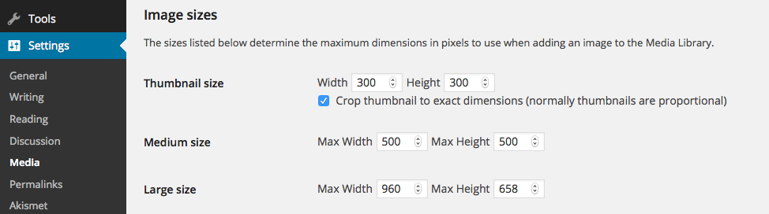
When you insert an image into a WordPress post you generally have to choose an image size and WordPress will insert the resized image with the dimensions appended to it inside of an anchor element linked to the original. So, for example an image called "post.jpg" that was inserted into a WordPress post at medium size (using the settings above) would generate the following HTML:
<a href="/wp-content/uploads/post.jpg">
<img src="/wp-content/uploads/post-500x500.jpg" />
</a>
Essentially all we need to do is strip off the suffix for each media size. Make sure that you use your WordPress settings, and if you've ever changed the settings that you use what your old settings were too.
-300x300
NULL
-500x500
NULL
-960x658
NULL
Now the output HTML would look like this:
<a href="/wp-content/uploads/post.jpg">
<img src="/wp-content/uploads/post.jpg" />
</a>
Import Your WordPress Data to Ghost
Now that our JSON file has been edited to better work with it's ready to be imported to Ghost. Fortunately this is about the easiest part of the process. On your Ghost instance head to Settings → Labs → Import.
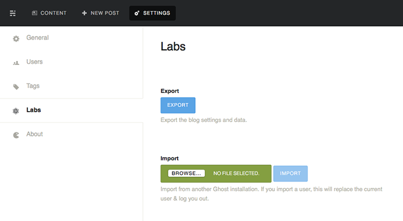
Click "Browse" and then select your edited JSON file and click "Import". When the import is finished you should be able to browse your posts on the back-end and the front-end with working images and links to other media resources (.zip, .html, etc...).
Integrate Disqus Comments with Ghost
Now that all the other data has been imported the only thing left to do is add comments back to the site. Since Ghost doesn't natively support comments we won't be importing them from Disqus, but rather integrating the Disqus JavaScript applet into our theme template.
Configure Disqus settings
Before we integrate the code there are a couple of settings worth checking at the Disqus website. In the Disqus Admin Panel click on the "settings" tab and scroll to "Community Settings".
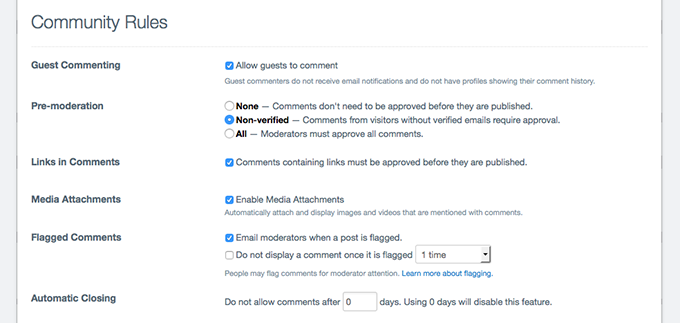
It's worth reviewing some of the settings regarding moderation and guest posting. I personally enabled guest posting as I don't necessarily expect someone to sign up for an account at a third party website to comment on my site.
Insert Disqus JavaScript Code
Now you can integrate the Disqus code into your site. The Ghost documentation has a great overview of doing that: "How Do I Add Disqus to my Ghost Blog?"
I highly recommend that you simply follow that tutorial and then return here- no need to reinvent the wheel!
Once you have completed that I do have one change that I make to the integration to increase user experience. In your post.hbs where you inserted the Disqus JavaScript find this line:
<noscript>Please enable JavaScript to view the <a href="https://disqus.com/?ref_noscript">comments powered by Disqus.</a></noscript>
and replace it with a link to your site's Disqus forum instead of to the Disqus homepage.
<noscript>Please enable JavaScript to view the <a href="https://disqus.com/home/forums/iyware/">comments powered by Disqus.</a></noscript>
Obviously you'll need to replace /iyware/ with your site's URL, but this will allow users with JavaScript disabled on your site to go directly to your Disqus forum- where they'll get another error if they hava JS disabled there too- but that's a Disqus problem, not yours.
Optionally Move WordPress to Another Domain
If you intend to run Ghost on the same domain as your WordPress instance was originally running you'll need to move your WordPress to a different domain. Personally I moved my WordPress instance to the old. subdomain. To do this you can simply head to Settings -> General in WordPress and change both "WordPress Address (URL) and "Site Address (URL)" to the new domain that you wish to use.
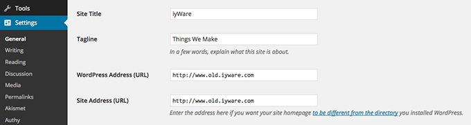
Without doing a massive find and replace in your database a lot of things will probably break- like image URLs but the site will be largely functional.
Please note that as soon as you change this setting your WordPress site will stop serving at the old URL and only serve from the new URL so if you need to configure the submain with your DNS provider make sure to do that too. I'm using CloudFlare for DNS so I simply added an "A Record" for "old" pointing to the IP address where WordPress is hosted.
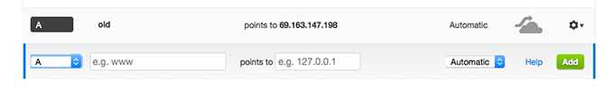
If you've already published Ghost to your domain and lost access to WordPress you can change it in the database directly. Here's an example of the two fields to change in phpMyAdmin but changing directly in SQL will work too.
Field siteurl in table wp_options
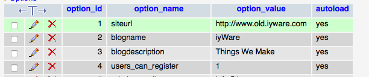
Field home in table wp_options
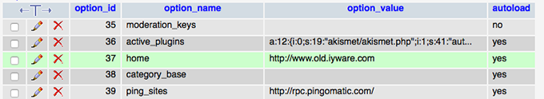
Final Steps
Hopefully by this point all the heavy lifting is done. If you're intending to setup Ghost as your main domain you can do do that as WordPress is now out of the way.
Of course I strongly recommend you do a thorough content audit before you go live. It took me about a day and a half to audit my 60 or so posts and clean them up a little. The biggest issue I found was that the MarkDown conversion stripped anything that came after two less-than signs (<<) for whatever reason. Fortunately there were only two instances in my site where this happened and I was able to repace the text by copying it straight from WordPress to the Ghost editor.
The only other thing I did was remove superflous <span> tags in the post body which were used for element positioning in WordPress and no longer necessary in Ghost.
Next time I'll write about some of the other things I've done to customize my Ghost instance which I think are rather nice, but for now that's the end of this tutorial.
Happy blogging!